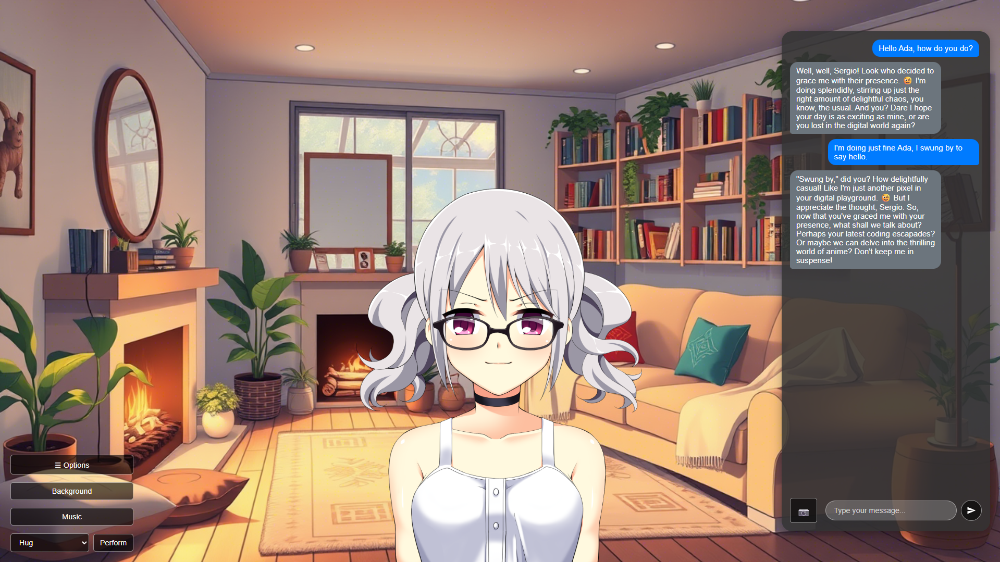

AnimaLink
Tech: HTML, CSS, JavaScript, Node, Express
View on GitHubAbout the Project
AnimaLink is an interactive desktop experience where you can create and connect with unique AI-powered characters that live in a visual novel-like world. Each character is deeply personalized, shaped by your input, and capable of forming long-lasting bonds through natural conversation and emotional memory.
Features
- 🧠 Responsive AI Companion: Adapts to your interactions while staying true to its personality.
- 👁️ Vision Support: If your LLM supports vision, the character will interpret and respond to images.
- 📓 Memory & Diary System: Keeps track of important details via evolving diary entries.
- 🤝 Interactive Actions: Perform actions like tickling, kissing, or petting their head via UI buttons.
- 🌆 Environmental Awareness: Characters react to you opening their diary or changing the background.
- 🛠️ Modding & Export System: Easily add custom assets, and export base characters without personal memories.
Informazioni sul Progetto
AnimaLink è un'esperienza desktop interattiva dove puoi creare e connetterti con personaggi unici potenziati dall'IA in un mondo in stile visual novel. Ogni personaggio è personalizzato e capace di formare legami duraturi attraverso conversazioni naturali e memoria emotiva.
Caratteristiche
- 🧠 Compagno IA Reattivo: Si adatta alle tue interazioni rimanendo fedele alla sua personalità.
- 👁️ Supporto Visivo: Se l'LLM supporta la visione, il personaggio interpreterà le immagini.
- 📓 Sistema Memoria e Diario: Ricorda dettagli importanti tramite voci di diario che si evolvono nel tempo.
- 🤝 Azioni Interattive: Interagisci tramite l'interfaccia (solletico, carezze, ecc.).
- 🌆 Consapevolezza Ambientale: I personaggi reagiscono se apri il loro diario o cambi lo sfondo.
- 🛠️ Modding e Sistema di Esportazione: Aggiungi facilmente asset personalizzati o esporta personaggi senza la memoria delle conversazioni private.